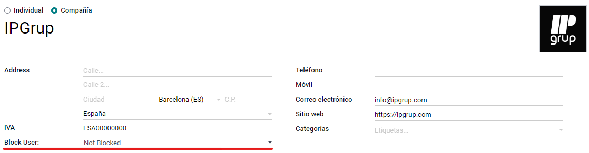
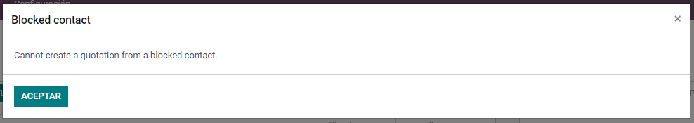

Ideal for big companies where they have several users and the boss, or sales manager, wants to block a contact to prevent commercials from creating new quotations, sales or invoices to the contact.
New option field is shown in the contact screen.
If you select the BLOCKED option:
1. Contact is not allowed in sales quotation
2. If the sales is confirmed, the 'truck' delivery button disappears
3. If you go to inventory expeditions, buttons disappear and you can't add quantity or create invoice